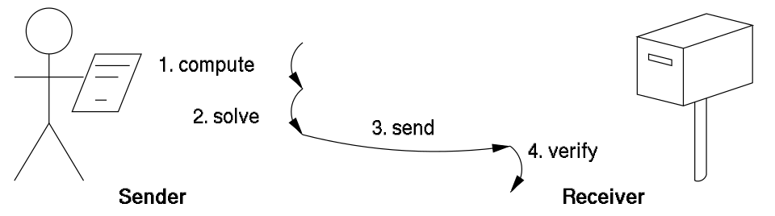
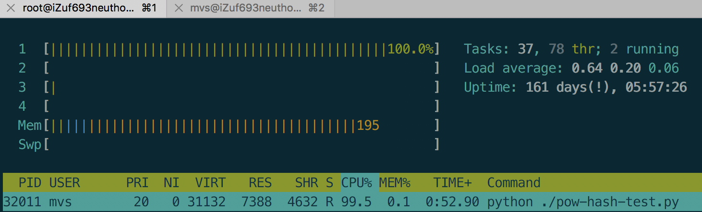
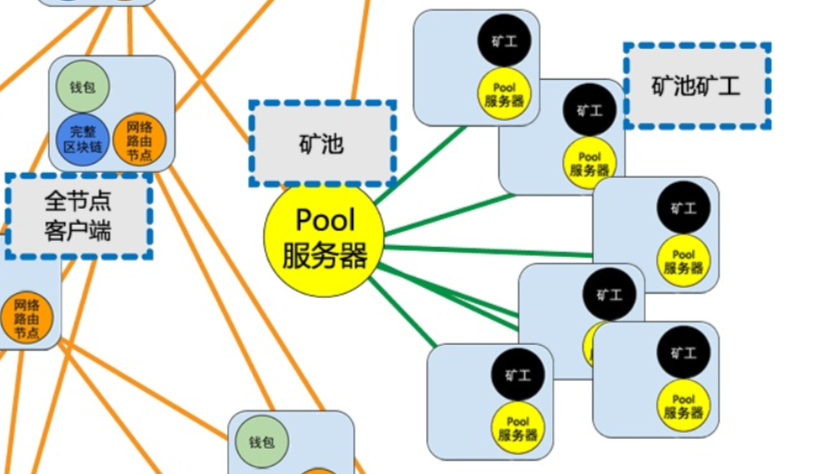

- 00 开篇词 帮你从0到1深入学习区块链技术.md.html
- 尾声篇 授人以鱼，不如授人以渔.md.html
- 新书首发《区块链第一课：深入浅出技术与应用》.md.html
- 第01讲 到底什么才是区块链？.md.html
- 第02讲 区块链到底是怎么运行的？.md.html
- 第03讲 浅说区块链共识机制.md.html
- 第04讲 区块链的应用类型.md.html
- 第05讲 如何理解数字货币？它与区块链又是什么样的关系？.md.html
- 第06讲 理解区块链之前，先上手体验一把数字货币.md.html
- 第07讲 区块链的常见误区.md.html
- 第08讲 最主流区块链项目有哪些？.md.html
- 第09讲 深入区块链技术（一）：技术基础.md.html
- 第10讲 深入区块链技术（二）：P2P网络.md.html
- 第11讲 深入区块链技术（三）：共识算法与分布式一致性算法.md.html
- 第12讲 深入区块链技术（四）：PoW共识.md.html
- 第13讲 深入区块链技术（五）：PoS共识机制.md.html
- 第14讲 深入区块链技术（六）：DPoS共识机制.md.html
- 第15讲 深入区块链技术（七）：哈希与加密算法.md.html
- 第16讲 深入区块链技术（八）： UTXO与普通账户模型.md.html
- 第17讲 去中心化与区块链交易性能.md.html
- 第18讲 智能合约与以太坊.md.html
- 第19讲 上手搭建一条自己的智能合约.md.html
- 第20讲 区块链项目详解：比特股BTS.md.html
- 第21讲 引人瞩目的区块链项目：EOS、IOTA、Cardano.md.html
- 第22讲 国内区块链项目技术一览.md.html
- 第23讲 联盟链和它的困境.md.html
- 第24讲 比特币专题（一）历史与货币.md.html
- 第25讲 比特币专题（二）：扩容之争、IFO与链上治理.md.html
- 第26讲 数字货币和数字资产.md.html
- 第27讲 弄懂数字货币交易平台（一）.md.html
- 第28讲 弄懂数字货币交易平台（二）.md.html
- 第29讲 互联网身份与区块链数字身份.md.html
- 第30讲 区块链即服务BaaS.md.html
- 第31讲 数字货币钱包服务.md.html
- 第32讲 区块链与供应链（一）.md.html
- 第33讲 区块链与供应链（二）.md.html
- 第34讲 从业区块链需要了解什么？.md.html
- 第35讲 搭建你的迷你区块链（设计篇 ）.md.html
- 第36讲 搭建你的迷你区块链（实践篇）.md.html
- 捐赠
第12讲 深入区块链技术（四）：PoW共识
上一篇文章中，我们谈到了区块链其实就是一种分布式系统，它在技术上并没有跳出分布式系统的理论框架，只是给出了一种不同于计算科学领域的解决方案。今天，我们就来重点聊聊区块链的这种解决方案： PoW 共识机制。
PoW工作量证明
因为比特币采用了PoW共识机制，所以这个概念才得以被广泛传播。PoW全称Proof of Work，中文名是工作量证明，PoW共识机制其实是一种设计思路，而不是一种具体的实现。
PoW机制其实早在1997年就被提出了，它早期多被应用在抵抗滥用软件服务的场景中，例如抵抗垃圾邮件（所以PoW在邮件服务系统会有所涉及）。
我们借用维基百科的一张图来解释一下PoW机制是如何用在这个场景中的。
为了防止垃圾消息泛滥，接收者并不直接接受来自任意发送者的消息，所以在一次有效的会话中，发送者需要计算一个按照规则约定难题的答案，发送给接受者的同时，需要附带验证这个答案，如果这个答案被验证有效，那么接受者才会接受这个消息。

可以看出PoW的核心设计思路是提出一个计算难题，但是这个难题答案的验证过程是非常容易的，这种特性我们称之为计算不对称特性，我们在“浅谈区块链共识机制”中举的24点游戏的例子就具备了计算不对称特性。
如何理解区块链PoW
上面介绍了一般的PoW是什么，那么区块链上的PoW又是如何设计的呢，我们还是以比特币为例子来讲一讲，这个部分会有代码演示，如果你在收听音频，可以点击文稿查看。
在分析拜占庭将军问题的时候可以看出，如果所有节点在同一时刻发起提案，那么这个系统的记账过程将会非常的复杂混乱，为了降低具有提案权的节点数量，采用工作量证明不失为一个好办法。
所以我们需要构造一个计算不对称的难题，这个难题在比特币中被选定为以SHA256算法计算一个目标哈希，使得这个哈希值符合前N位全是0。
举个例子，假设我们给定一个字符串“geekbang”，我们提出的难题是，计算一个数字，与给定的字符串连接起来，使这个字符串的SHA256计算结果的前4位是0，这个数字我们称作nonce，比如字符串”geekbang1234”，nonce就是1234，我们要找到符合条件的nonce。
我们以Python代码作为示例。
#!/usr/bin/env python
import hashlib
def main():
base_string = "geekbang"
nonce = 10000
count = 0
while True:
target_string = base_string + str(nonce)
pow_hash = hashlib.sha256(target_string).hexdigest()
count = count + 1
if pow_hash.startswith("0000"):
print pow_hash
print "nonce: %s scan times: %s" % (nonce, count)
break
nonce = nonce + 1
if __name__ == '__main__':
main()
代码中，我规定了基础字符串是”geekbang”，nonce从10000开始自增往上搜索，直到找到符合条件的nonce值。
我们计算的结果放在图中，你可以点击查看。
# 前4位是0
0000250248f805c558bc28864a6bb6bf0c244d836a6b1a0c5078987aa219a404
nonce: 68828 scan times: 58829
# 前5位是0
0000067fc247325064f685c32f8a079584b19106c5228b533f10c775638d454c
nonce: 1241205 scan times: 1231206
# 前7位是0
00000003f41b126ec689b1a2da9e7d46d13d0fd1bece47983d53c5d32eb4ac90
nonce: 165744821 scan times: 165734822
可以看出，每次要求哈希结果的前N位多一个0，计算次数就多了很多倍，当要求前7位都是0时，计算次数达到了1.6亿次。这里我同时截图了操作系统当时CPU的负载，可以看到单核CPU负载长时间达到100%。

通过上述程序，希望你对区块链PoW机制有个直观的了解。由于结果只能暴力搜索，而且搜索空间非常巨大，作弊几乎不可能，另外符合条件的nonce值也是均匀分布在整个空间中的，所以哈希是一个非常公平且粗暴的算法。
以上代码的基本逻辑就是PoW挖矿过程，搜索到一个目标值就会获得记账权，距离上一次打包到现在未确认的交易，矿工就可以一次性将未确认的交易打包并广播了，并从Coinbase获得奖励。
实际挖矿的基本步骤如下。
- 生成Coinbase交易，并与其他所有准备打包进区块的交易组成交易列表，并生成默克尔哈希；
- 把默克尔哈希及其他相关字段组装成区块头，将区块头（Block Header）作为工作量证明的输入，区块头中包含了前一区块的哈希，区块头一共80字节数据；
- 不停地变更区块头中的随机数即nonce的数值，也就是暴力搜索，并对每次变更后的的区块头做双重SHA256运算，即SHA256(SHA256(Block_Header))），将结果值与当前网络的目标值做对比，如果小于目标值，则解题成功，工作量证明完成。
如果更深程度去理解的话，PoW机制是将现实世界的物理资源转化成区块链上虚拟资源的过程，这种转化为区块链提供了可信的前提。
PoW挖矿的发展历程
好了，现在我们知道了，PoW的过程其实就是计算一个难题解的过程。
在区块链的发展史上，PoW经历了大致两个阶段。分为早期分散挖矿阶段和中心化矿池挖矿阶段。我们目前处于第二个阶段，并且将会长期处于这个阶段。
早期分散挖矿是中本聪的愿景，期望是1CPU=1票，所以如果CPU挖矿，那么将会是非常理想化的情况，而现实的情况是，SHA256只需要非常简单的重复计算逻辑，它不需要复杂的逻辑控制。
那么CPU这种重控制逻辑，轻重复计算的计算单元来搞这么低端的暴力计算非常吃力不讨好，大部分人的第一反应肯定是用GPU呀，非常正确。
所以这个时期，出现了GPU挖矿，它的效率是CPU的十几甚至上百倍，那么1CPU=1票的逻辑就被打破了，挖矿工具的改变让人们意识到挖矿技术也是极大改进的。除了GPU挖矿，我们还有ASIC芯片挖矿，这部分内容我们在讨论挖矿算法分类时会详细讲解。
同期我们也慢慢进入到了中心化挖矿阶段。中心化挖矿很好理解，算力如果越分散，也就意味着竞争越激烈，如果某个节点计算出答案了，那么也意味着其他矿工这段时间的工作量几乎都白费了，投入了物理资源结果零收益，可以说是负收益。
那怎么办呢？思路就是把分散的算力汇聚到一个池子里面，这个池子我们称作矿池，就像四面八方的小溪流最终汇总成一条大江一样。
矿工参与到某个矿池，相当于矿工把算力租给矿池了，与其他矿工联合挖矿，最后看起来矿池这个节点的算力就会很大，获得记账权的概率就越大，如果这个矿池计算出了答案，将获得Coinbase的奖励，矿池就会按既定的分配比例打给每一位参与的矿工。
我们借用一下《精通比特币》一书中的部分图来看一下：

矿池作为一个中心节点，可以被矿工连接，而在比特币全网来看，矿池节点本质上也只是一个全节点，它与其他全节点一起组成了比特币的点对点网络，特殊的地方仅仅在于它可以产生新的区块。
PoW挖矿算法分类与简介
PoW挖矿算法大致分为两个大类，第一类叫做计算困难，第二类叫内存困难。
这两类的区别在于对于提供工作量证明的组件要求不同。我们知道计算机的组成分为计算单元和存储单元，通过以往的编程经验我们还可以知道，一个计算机的瓶颈往往是IO，如果要制造大量的IO操作，可以通过写程序撑大内存，制造大量的数据处理过程，使工作量证明从计算单元转变为存储单元。
那为什么要这么做呢？
其实在PoW挖矿中心化以后，又出现了一次挖矿工具改进，这次超越了GPU，人们先是尝试在FPGA上尝试SHA256的计算过程，结果计算效率成倍于GPU。
FPGA出现的时间比较短暂，最终人们开发出了ASIC专业芯片来计算SHA256，这就是我们常说的专业矿机。
专业矿机的出现加速了PoW挖矿的中心化过程，因为购买专业矿机需要额外的时间和精力，配置运行还有一定的门槛，普通人也只能从专业机构手里购买专业矿机。
所以这些专业矿机直接就是数字货币印钞机，生产专业挖矿芯片的商业公司几乎成了数字货币的货币发行司，这不得不说到市值直逼英伟达的比特大陆公司，它用的就是专业生产数字货币挖矿芯片。
新的数字货币开发者们为了防止情况重演，不断发明新的挖矿算法。有名的有Scrypt、X11、SHA-3，不过这些依然是计算困难型的挖矿算法，依然没有逃脱出现专业矿机的命运。
这里不得不提到以太坊的PoW挖矿算法：ETHASH，ETHASH是Dagger-Hashimoto的修改版本，它是典型的内存困难型挖矿算法。直到如今，也没有芯片厂商设计出挖矿芯片。
正如我们上文所说，因为工作量证明要求的组件从计算资源转变为内存资源，而对内存的高要求使得矿工必须加内存。
在专业矿机上加一块内存的收益与在GPU上加一块内存获得的收益是差不多的，所以厂商并没有研发内存困难型专业矿机的动力，没有专业矿机的出现，这从某种程度上也缓解了算力中心化的问题。
PoW的优势和劣势
PoW共识的内在优势在于可以稳定币价，因为在PoW币种下，矿工的纯收益来自Coinbase奖励减去设备和运营成本，成本会驱使矿工至少将币价维持在一个稳定水平，所以攻击者很难在短时间内获得大量算力来攻击主链。
PoW共识的外在优势是目前它看起来依然是工业成熟度最高的区块共识算法，所以在用户信任度上、矿工基础上都有很好的受众。
PoW共识最大的缺点是非常消耗计算资源，耗电耗能源，这一点也一直为人们所诟病。因为每次产生新的区块都会让相当一部分工作量证明白白浪费了，也就是将计算资源浪费了。
目前来看这个是无解的，只要是PoW共识，一定会遇到计算资源浪费的问题。不过人们也想了一些改进方案，早期如素数币，近期有比原币，它们都号称深度学习友好型的工作量证明方法。
从理论上来看，PoW会一直有51%算力攻击的问题，即攻击者只需要购买超过全网51%算力设备，即可发起“双花攻击”，甚至“重放攻击”等多种高收益攻击，这个问题目前没有解决方案。
除了51%攻击，PoW共识还有自私挖矿的问题，自私挖矿是一种特殊的攻击类型，不会影响区块链正常运转，但是会形成矿霸，间接造成51%攻击，我们就曾经遇到过这样的自私挖矿攻击。
PoW共识机制是一种简单粗暴的共识算法，它不要求高质量的P2P网络资源，它可以为公链提供稳定有效的记账者筛选机制。同时它也面临了挖矿中心化严重的问题，这也促使人们研究出了新的共识机制，我们留到下一篇讲解。
总结
今天我介绍了PoW工作量证明，并且使用Python语言演示了一遍基于SHA256的挖矿算法工作过程，又介绍了发展历程和算法分类，最后提到了PoW的优势和缺陷。相信你对PoW机制的理解可以更加深入了。
PoW工作量证明的挖矿过程是否可以替换成有意义的算法呢，历史上是否有过类似创新？你可以调查一下，我们一起分享。
© 2019 - 2023 Liangliang Lee. Powered by gin and hexo-theme-book.